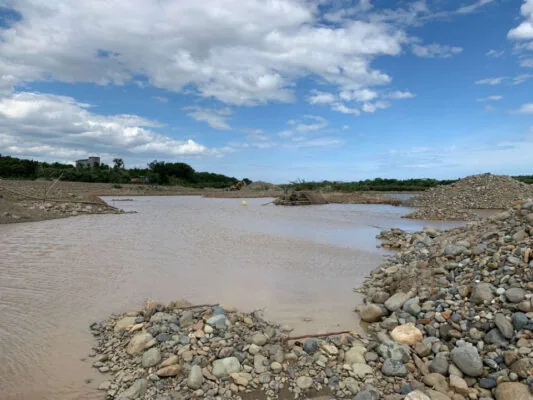
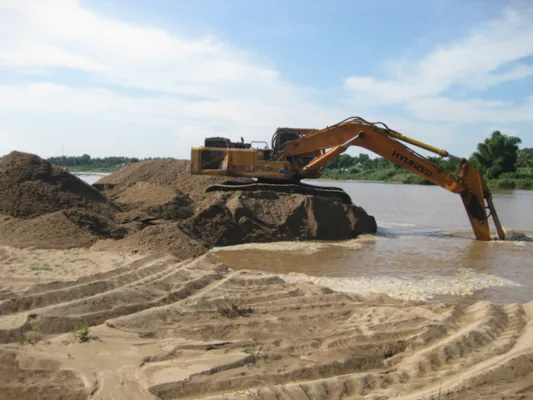
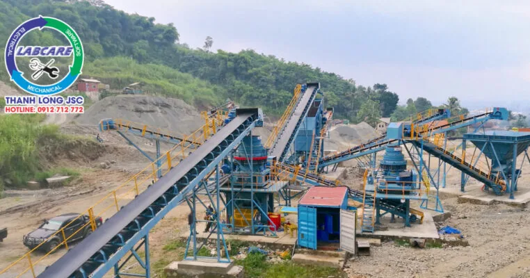
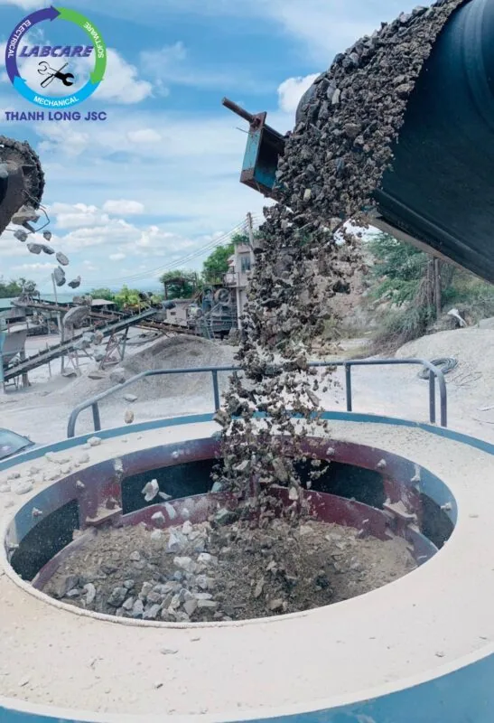

Hiện nay, nhu cầu cát nhân tạo tại Tỉnh Ninh Thuận dùng cho xây dựng công trình đang phát triển mạnh. Trong khi đó nguồn cát tự nhiên lại không đủ cung cấp, giá cát tự nhiên cao gấp 3 lần cát nhân tạo. Chính vì thế để đáp ứng nguồn cát tự nhiên, phục vụ cho ngành công nghiệp nói chung và ngành xây dựng nói riêng. Tỉnh Ninh Thuận đang có các chính sách kêu gọi các công ty, doanh nghiệp mạnh dạn đầu tư trạm sản xuất cát nhân tạo. Đáp ứng các tiêu chuẩn kỹ thuật xây dựng công nghiệp, dân dụng và đảm bảo cân bằng môi trường.
Thực trạng cát nhân tạo tại Tỉnh Ninh Thuận
Nắm bắt được nhu cầu cát đang tăng nhanh, trong khi nguồn cát tự nhiên không đủ cung cấp cho thị trường. Một công ty lớn nhất tại Ninh Thuận, đã đầu tư 1 trạm sản xuất cát nhân tạo 500 tấn/giờ. Nhằm giảm tải nguồn nguyên liệu cát tự nhiên, đang có nguy cơ thiếu hụt như hiện nay.
Chủ Tịch Hội Đồng Quản Trị Công ty lớn nhất Tỉnh Ninh Thuận cho biết:. “Lúc trước 80% tầng đất bề mặt tại các mỏ đá do công ty khai thác được dùng làm vật liệu san lấp, phần còn lại thải ra môi trường thiên nhiên. Cách làm này không những không khai thác hết nguồn tài nguyên sẵn có ở lớp đất mặt, mà còn gây ảnh hưởng đến môi trường xung quanh.
Tiết kiệm hơn với trạm cát nhân tạo tại Tỉnh Ninh Thuận
Để khai thác hết nguồn nguyên liệu, từ lớp đất mặt này. Công ty lớn nhất Tỉnh Ninh Thuận năm 2019, Công ty VLXD Ninh Thuận đã đầu tư 1 trạm sản xuất cát nhân tạo 500 tấn/giờ. Đưa tầng đất bề mặt là lớp đất trên cùng vào nghiền mịn, rửa sạch cho ra thành phẩm là cát nhân tạo. Còn lớp bùn sét được tách ra, kết hợp với nguyên liệu khác dùng làm gạch không nung. Với cách làm này, mỗi năm công ty sản xuất và cung cấp cho thị trường 90.000 khối cát nhân tạo. Thấp hơn giá cát tự nhiên dao động là 125.000 đồng/m3.

Truyền tư duy mạnh dạn đầu tư cát nhân tạo tại Tỉnh Ninh Thuận
Thấy được hiệu quả các mặt mang lại, một số công ty bạn ở gần mỏ đá đã đầu tư thêm 2 trạm sản xuất cát nhân tạo. Lần lượt là 350 tấn/giờ và 500 tấn/giờ. Đáp ứng thêm nhu cầu thị trường cát nhân tạo tỉnh Ninh Thuận ngày càng tăng.
Tổng Giám đốc một Nhà máy Bê tông tại Ninh Thuận chia sẻ:. “Nhà máy bê tông đã dùng cát nhân tạo do Công ty lớn nhất Tỉnh Ninh Thuận sản xuất, để thay thế hoàn toàn cát tự nhiên trong sản xuất bê tông. Khoảng trên 400m3/ngày. Phải nói rằng tính tới thời điểm này, đây là trạm nghiền cát nhân tạo và rửa cát tốt nhất nên sản phẩm cát đưa ra rất sạch và mịn”.

Tính chất vật lý của cát nhân tạo tại tỉnh Ninh Thuận
Thực tế trong quá trình nghiền, cát nhân tạo không lẫn tạp chất. Hạt cát đồng đều hơn cát tự nhiên, có thể điều chỉnh module và tỷ lệ thành phần hạt cho các loại bê tông khác nhau. Nên khi dùng sản xuất bê tông, thì độ kết dính của bê tông. Đạt hiệu quả cao hơn so với sử dụng cát tự nhiên như trước đây. Việc dùng cát nhân tạo, đã giúp nhà máy giảm khoảng 6% khoản đầu tư hàng tháng. Giúp tiết kiệm xi măng, nhựa đường, tăng tuổi thọ công trình. Rút ngắn thời gian thi công (bê tông xi-măng, bê tông Asphalt, bê tông đầm lăn, bê tông nhựa microsell). Đặc biệt là chất lượng bê tông rất đảm bảo, được thị trường rất tin dùng.
Ban ngành các Sở đều “mở đường” cho các công ty và doanh nghiệp
Phó Giám đốc Sở Xây dựng tỉnh Ninh Thuận Hồ Ngọc Tiến cho biết:. “Đến thời điểm này trên địa bàn tỉnh chỉ có một doanh nghiệp là Công ty Xây dựng Ninh Thuận, đầu tư trạm sản xuất cát nhân tạo và được tỉnh cấp phép. Nhìn chung, sản phẩm cát nhân tạo được sản xuất đảm bảo chất lượng theo tiêu chuẩn quy định. Đáp ứng đầy đủ các tiêu chí, của xây dựng công trình. Đồng thời đáp ứng được nguyên liệu, phục vụ trong quá trình đô thị hóa. Giảm tải được việc sử dụng, và khai thác cát tự nhiên quá mức như hiện nay.
Theo đánh giá của Sở Xây dựng tỉnh Ninh Thuận. Tổng trữ lượng tài nguyên cát phục vụ cho ngành xây dựng, trên địa bàn tỉnh được dự báo khoảng hơn 12 triệu m3. Tuy nhiên, với tốc độ đô thị hóa diễn ra như hiện nay. Nhu cầu cát phục vụ xây dựng tăng nhanh, khả năng thiếu hụt nguồn cát tự nhiên là rất lớn. Do đó đòi hỏi việc tạo ra nguồn cát nhân tạo để bổ sung, thay thế cát tự nhiên là rất cấp thiết cần được tính đến.
Ông Lê Huyền, Phó Chủ tịch UBND tỉnh Ninh Thuận cho biết:. “Tốc độ phát triển của công nghiệp hóa, hiện đại hóa. Trong đó có sự phát triển của ngành xây dựng, đã tạo sức ép rất lớn đối với nguồn tài nguyên. Hiện nay thực trạng nguồn tài nguyên cát cũng đang bị dần bị cạn kiệt, do khai thác quá mức, khai thác không hợp lý, …”.

Vì thế cho nên
Để có nguồn vật liệu dần thay thế, giảm áp lực khai thác và sử dụng cát tự nhiên. UBND tỉnh Ninh Thuận khuyến khích các công ty, doanh nghiệp. Đầu tư mở rộng quy mô sản xuất cát nhân tạo tại Ninh Thuận. Và ưu tiên trong các công trình sử dụng vốn ngân sách.
Việc sản xuất cát nhân tạo, phải đảm bảo chất lượng theo tiêu chuẩn quy định. Đáp ứng nhu cầu nguyên vật liệu phục vụ cho ngành xây dựng. Giúp hạn chế tình trạng “cát tặc” xảy ra như hiện nay ở các sông, suối,… Gây ra vấn đề sạt lở, ô nhiễm, mất an ninh trật tự.

Thanh Long JSC chuyên cung cấp:
- Dây chuyền nghiền cát/đá cố định: Máy kẹp hàm, máy nghiền côn, sàng rung phân loại, máy nghiền cát nhân tạo VSI …
- Dây chuyền nghiền cát/đá di động: máy kẹp hàm di động, máy nghiền côn di động, sàng rung phân loại di động, máy nghiền cát nhân tạo VSI di động,..
- Công nghệ rửa/tách:: Máy rửa cát theo module, sàng rung tách nước, máy tuyển rửa cát, máy tách cát mịn, máy thu hồi cát mịn…
- Vật tư, thiết bị phụ tùng: Dao nghiền, lưới sàng, má kẹp hàm, nón côn, …
Liên hệ với Thanh Long JSC:
Kênh video Youtube:
Page Facebook: Công Nghệ Máy Nghiền Đá
Website: https://thegioimaynghienda.com https://labcare.com.vn/
Zalo, hotline: 0912 712 772
#bn